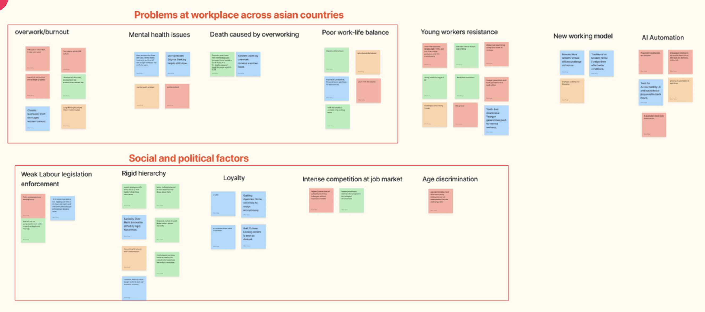
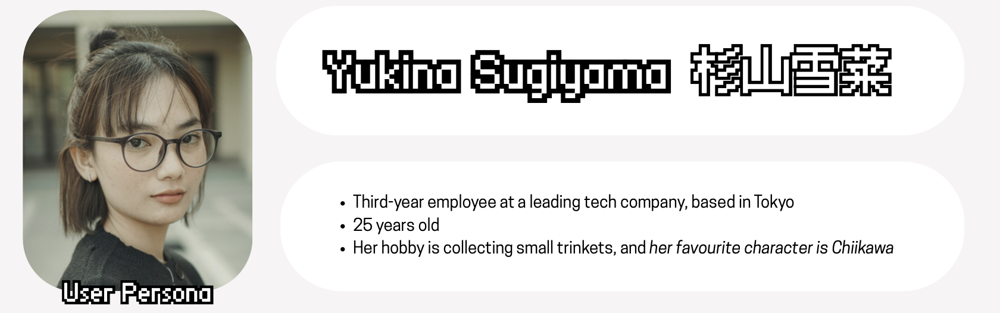
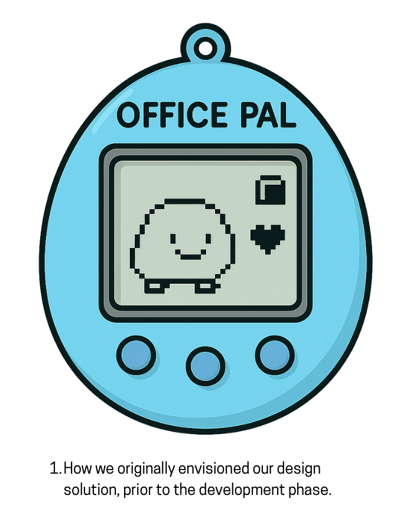
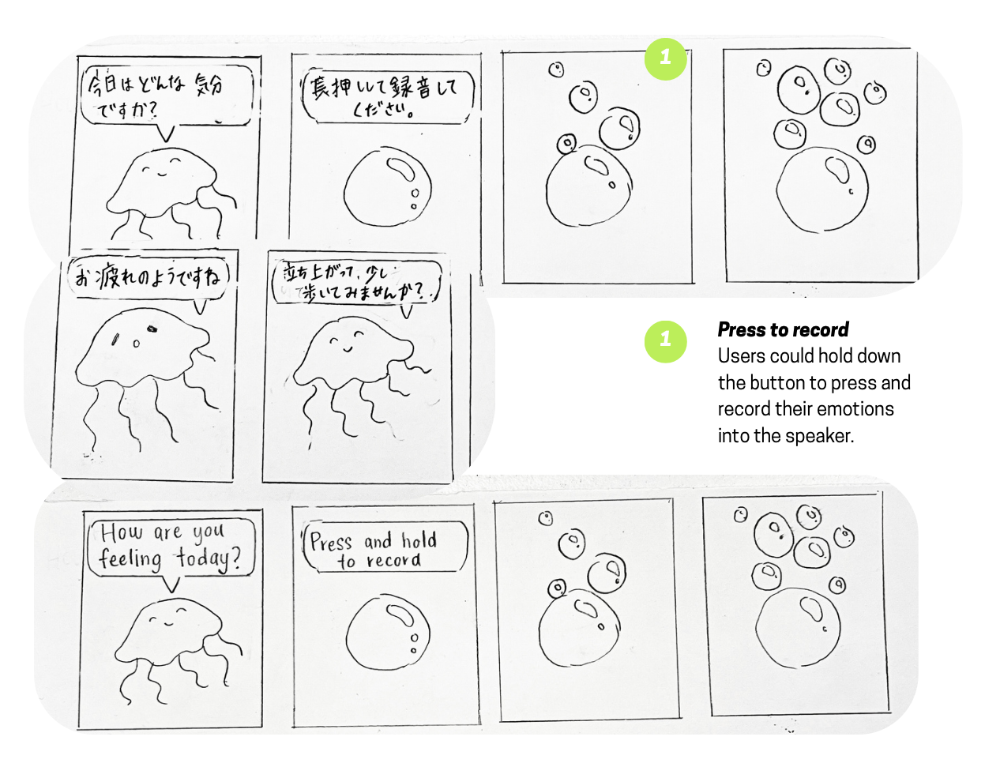
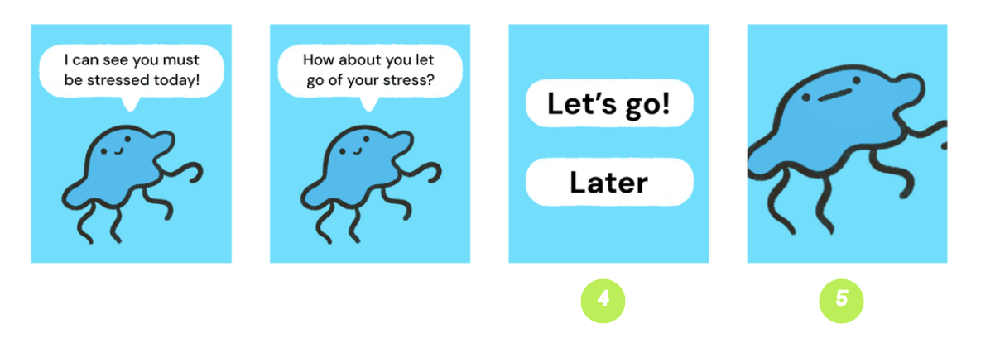
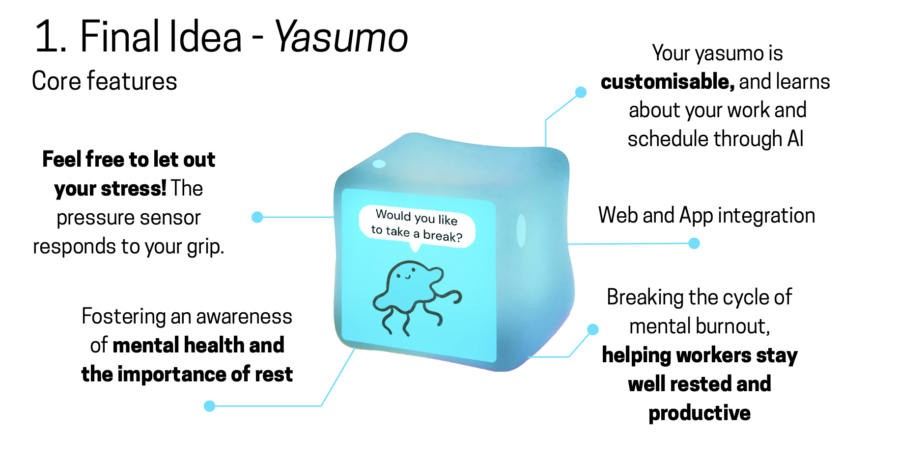

01 / Overwork
Long hours can become a visible sign of commitment.
Productivity is often associated with presence and diligence, even when prolonged hours reduce focus and wellbeing.
Project 04 · Product Design · AI Wellbeing
A culturally sensitive AI wellbeing companion designed to help young professionals in Japan recognise stress, create space for rest, and communicate emotions more privately at work.

01 — The Challenge
Our original brief explored the future of work and AI across Asia. Early research surfaced recurring issues around overwork, burnout, hierarchy and low autonomy.
We narrowed the project to young professionals in Japan's tech sector, where long hours, social pressure and mental-health stigma can make it difficult for junior employees to express stress or challenge workplace expectations.
02 — Research
01 / Overwork
Productivity is often associated with presence and diligence, even when prolonged hours reduce focus and wellbeing.
02 / Hierarchy
Group harmony and seniority can make it difficult to question meetings, workload or workplace expectations.
03 / Mental health
Cultural expectations around endurance can discourage employees from openly expressing difficulty or asking for support.
“Everyone else is doing their best, so I can’t speak up.”Research participant describing workplace pressure in Japan

Suggested image: affinity map, Japan research, or key challenge synthesis.
03 — Target User
We focused on professionals under 35 working in established Japanese technology companies. Our persona represents a junior employee who works overtime, attends multiple meetings and feels pressure to prove that she is committed.
She wants to rest and speak more openly, but she does not want to appear difficult, weak or disrespectful toward senior colleagues. The design therefore needed to support wellbeing without demanding direct confrontation.

Suggested image: Yukina persona, user needs, or empathy-map detail.
04 — The Reframe
How might we use AI to help young Japanese tech professionals manage workload and wellbeing while respecting cultural norms around hierarchy and social judgement?
05 — The Concept
Yasumo began as a Tamagotchi-inspired virtual pet that could learn about a user's schedule, check in during the workday and provide small moments of emotional support.
The character-based interaction made the system feel softer and more personal, while the physical object created a low-friction way to engage with wellbeing inside the workplace itself.

Suggested image: chosen concept + early paper prototype.
06 — Key Iteration
Our first prototype used voice recording. A user could hold a button and tell Yasumo how they were feeling. The character was well received, but the interaction conflicted with the office context.
One participant explained that they would not feel comfortable speaking personal frustrations aloud around colleagues. We replaced voice as the primary input with a pressure sensor, turning the device into a soft object users could squeeze privately when stressed.

Initial voice-recording interaction.

Pressure-based interaction aligned more closely with privacy and office behaviour.
07 — Final System
A soft silicone object with a touch display, pressure sensing and optional sound creates a discreet interaction at the desk.
A customisable character offers gentle prompts, breathing exercises and a softer interface for acknowledging stress.
The connected web/app experience combines stress tracking, schedules, meeting reflections, trends and suggested wellbeing activities.

Suggested image: final Yasumo render with the connected web interface.
08 — Reflection
Yasumo began as a broad project about AI and the future of work. It became stronger once we focused on a specific cultural tension: employees may recognise that they are stressed but still feel uncomfortable expressing it directly.
The voice-to-pressure iteration became the clearest example of this shift. Instead of asking users to adapt to the product, the product adapted to the realities of the workplace around them.
Next project